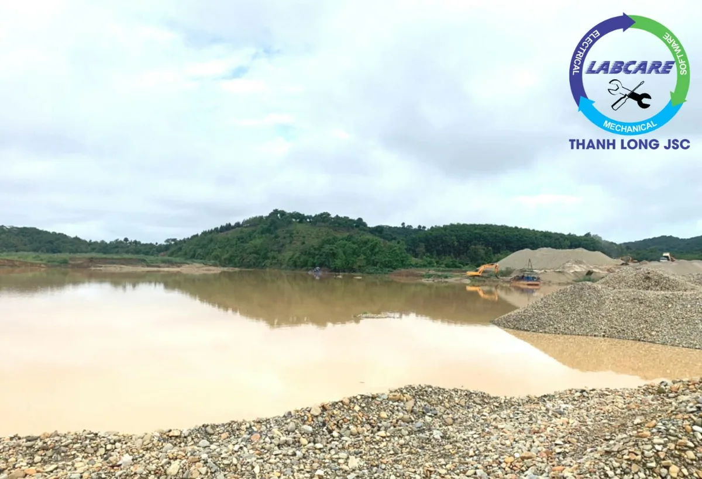
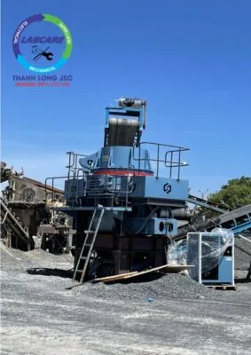
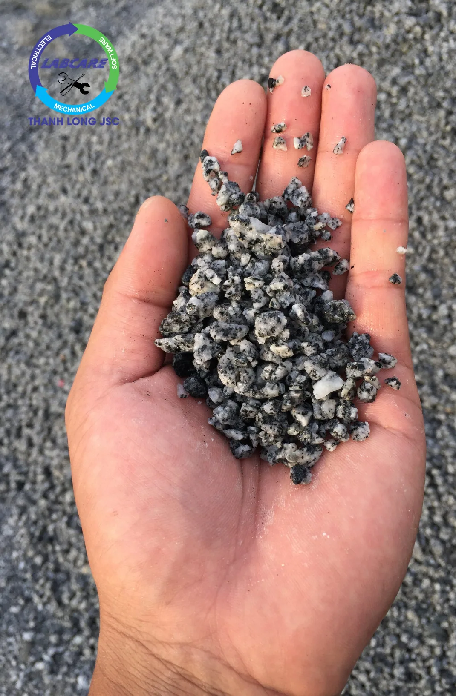
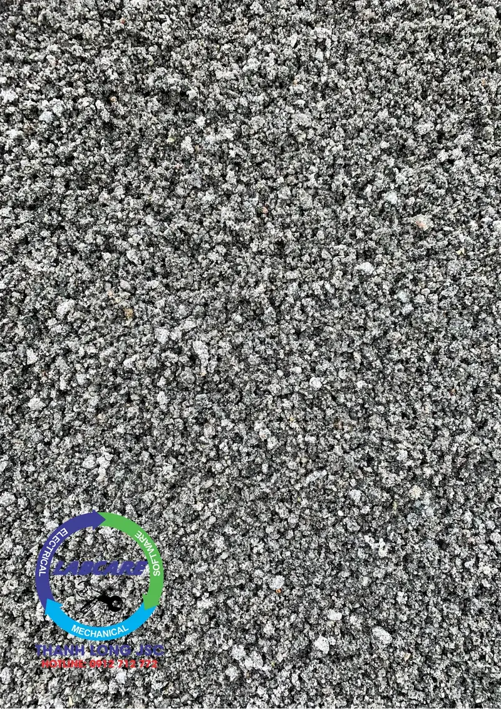
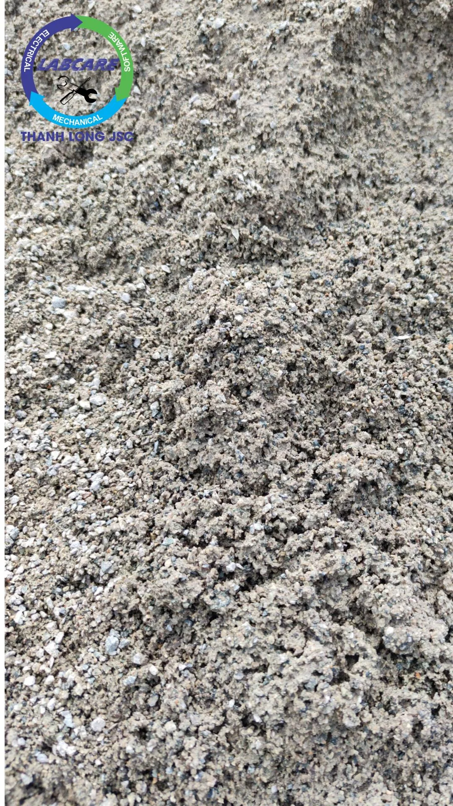
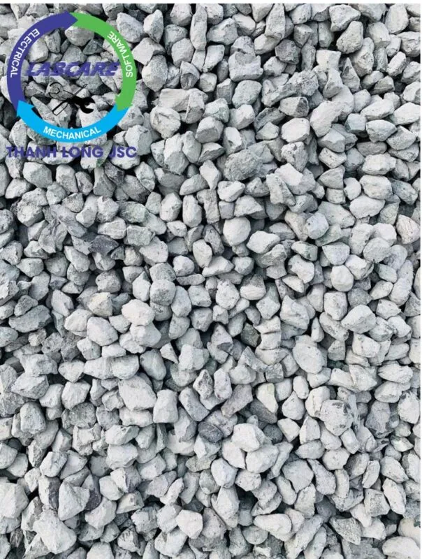
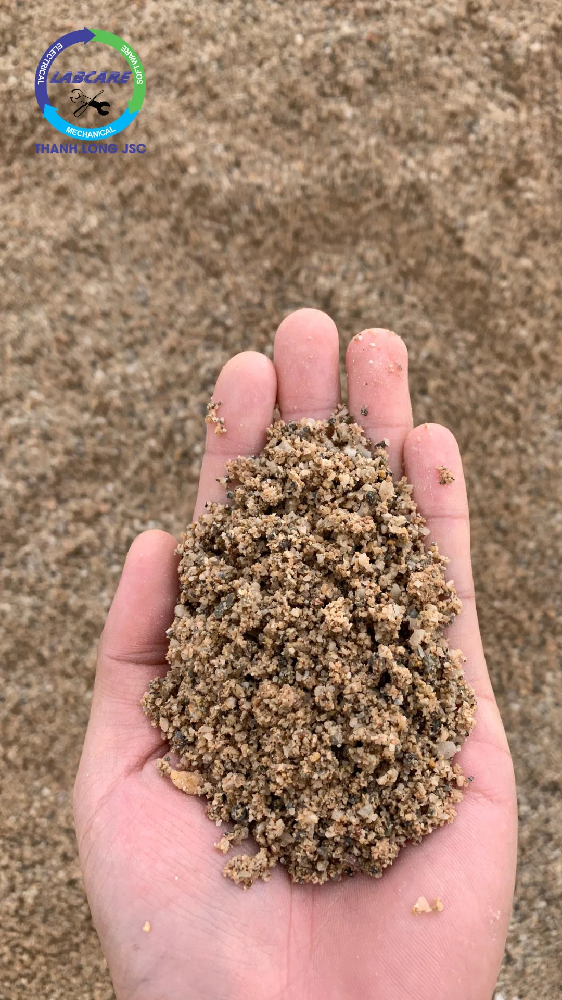
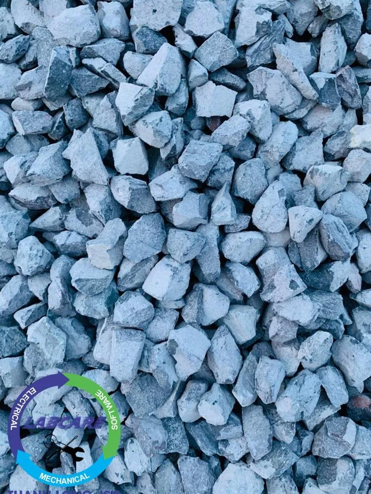

Những điều nên hay không nên khi chọn mua trạm nghiền đá cũ giá rẻ. Các chủ mỏ có thể thấy trạm nghiền đá từ thô sơ đến hiện đại, từ gia công trong nước đến nhập khẩu. Có lẽ sẽ có các chủ đầu tư tò mò, tìm hiểu làm sao để có những cục đá hạt cát đẹp. Đạt các tiêu chuẩn ISO mà không quan tâm tới hậu quả, khi chọn nhầm nhà cung cấp trạm nghiền đá sẽ ra sao ?
Có bao giờ các nhà đầu tư tự đặt ra câu hỏi, nên đầu tư trạm nghiền đá sao cho hiệu quả và tiết kiệm nhất ?. Chủ mỏ luôn chọn các phương án tối ưu nhất, cho mỏ nguyên liệu của mình. Nhưng lựa chọn một cách “ vô tội vạ”, thì thật là lãng phí tiền và các công nghệ hiện đại như hiện nay.
3 đừng – 3 việc đừng làm khi mua trạm nghiền đá cũ giá rẻ
1.Xác định tiềm năng khai khoáng:
Việt Nam có nguồn tài nguyên khoáng sản khá đa dạng và phong phú với trên 5.000 mỏ, điểm quặng của 60 loại khoáng sản khác nhau. Có một số loại khoáng sản quy mô trữ lượng đáng kể, tầm cỡ thế giới. Có ý nghĩa chiến lược và là nguồn lực để phát triển kinh tế – xã hội đất nước.
Trung bình mỗi năm ngành công nghiệp khai khoáng nước ta, cung cấp cho nền kinh tế khoảng 90 triệu tấn đá vôi xi măng. Khoảng 70 triệu m3 đá VLXD thông thường. Gần 100 triệu m3 cát xây dựng, cát san lấp. Trên 45 triệu tấn than, trên 3 triệu tấn quặng sắt… Giá trị sản lượng ngành khai khoáng (không kể dầu khí) chiếm khoảng 4-5% tổng GDP hàng năm; đóng góp trực tiếp cho ngân sách từ tiền cấp quyền khai thác khoáng sản, thuế tài nguyên, phí bảo vệ môi trường (không kể dầu khí) từ năm 2014 đến nay trung bình từ 16-20.000 tỷ đồng, trong đó thuế tài nguyên từ 10.000 – 11.000 tỷ đồng mỗi năm.
Do đó, nguồn nguyên liệu ở mỗi tỉnh sẽ khác nhau. Chủ mỏ cần xác định rõ tiềm năng phát triển nguyên liệu của mỏ. Nếu khan hiếm cát mà đầu tư vào khai thác đá chắc chắn sẽ không có lãi.

Nguồn khai thác khoáng sản từ tự nhiên
2. Nguồn nguyên vật liệu cần khai thác
Khi bắt tay vào việc khai thác khoáng sản cần phải xác định rõ :
Đá nguyên liệu của mỏ là đá gì ? Bazan, đá vôi, hay đá granite, andesit, dolomite, nghiền từ sỏi sông, sỏi đồi hay đá cát kết?
Kích thước sau nổ mìn và độ cứng của nguyên liệu là bao nhiêu ? Tính chất vật lý nguyên liệu ?
Tỷ lệ tạp chất trong nguyên liệu đầu vào là bao nhiêu %?
Thành phẩm đầu ra gồm những loại nào?
Có những yêu cầu nào về biên dạng, tiêu chuẩn cho sản phẩm đầu ra.
Tỷ lệ thu hồi của các sản phẩm ?
Tận thu các sản phẩm một cách tối đa.
=> Đừng xác định sai nguồn nguyên liệu sẽ dẫn tới hậu quả khó lường. Cùng tìm hiểu tiếp sẽ dẫn tới những việc gì xảy ra nhé.
3. Lựa chọn nhà cung cấp trạm nghiền đá. Tìm hiểu kỹ về chất lượng và hiệu quả, giá cạnh tranh nhất.
– Chủ mỏ thường “ham rẻ”, mua các loại máy này. Từ một số nhà sản xuất chế tạo phụ kiện của trạm nghiền đá cũ giá rẻ, hoặc các đội chuyên đóng trạm nghiền đá cũ. Mua qua người quen giới thiệu các nơi bán máy nghiền cũ, chỗ tôi đang lắp đặt dàn 250 hoặc 350, rồi bê nguyên cấu hình hoạt động của trạm nghiền đá đó vào lắp tại mỏ đá của mình mà không được tìm hiểu kỹ về tính chất vật lý của đá, loại đá cần nghiền và tính đồng bộ giữa các trạm…
4. Mua trạm nghiền đá cũ giá rẻ từ hàng Nhật bãi, Đài Loan, hoặc Mỹ…
Chúng tôi đã từng ghi nhận một số chủ mỏ rất vui và hào hứng. Khi mua được máy nghiền xách tay hoặc từ mỏ bên Nhật hay Mỹ về. Mà quên không biết rằng từ sau năm 1976 đến nay thì. Nhật Bản không còn sản xuất trạm nghiền đá mới nữa.
=> Đừng theo “ vết xe đổ ” những thế hệ đi trước, các hệ lụy xoay quanh việc bảo hành máy móc và vật tư thay thế, cũng như chuyển giao công nghệ. Thậm chí một số loại Côn lò xò hay côn thủy lực của Nhật đã ngừng sản xuất, không có phụ tùng thay thế, khi hư hỏng thì chủ mỏ chỉ còn cách bán phế liệu.
“Vết xe đổ“ khi lựa chọn những trạm nghiền đá cũ giá rẻ, và các vật tư thiết bị bãi phế liệu“Vết xe đổ“ khi lựa chọn những trạm nghiền đá cũ giá rẻ, và các vật tư thiết bị bãi phế liệu
Dễ nhận thấy nhất chính là vật tư tiêu hao của thiết bị đã qua thời gian sử dụng khá lâu trước đó, khiến chủ đầu tư không nắm chắc được thời gian tiêu hao vật tư. Từ đó việc tính toán thời gian hao mòn, công suất, bảo hành bảo trì không được đảm bảo.
Khó khăn nhất khi sử dụng những trạm nghiền đá cũ giá rẻ là không thể tìm kiếm được các vật tư thích hợp như vòng bi, bạc đạn,… có nhiều đơn vị phải chịu cảnh dừng máy trong thời gian 1-2 tháng vì không tìm được vật tư thay thế trên thị trường.
Việc sử dụng những dây chuyền máy nghiền đá cũ giá rẻ đòi hỏi chủ đầu tư phải chú trọng hơn về thợ vận hành. Phải đảm bảo được thợ vận hành dày dặn kinh nghiệm để xử lý toàn bộ những khó khăn trên.
Về điện năng tiêu thụ. Bất kể thiết bị cũ nào cũng không ngoại lệ khi lượng điện năng để hoạt động luôn luôn cao hơn những thiết bị mới.
7 nên – 7 việc nên làm khi mua trạm nghiền đá
Nên chọn các thiết bị chính hãng từ đại lý hoặc nhà sản xuất: tập trung chú ý logo, website tên thương hiệu, hình ảnh video đầy đủ, có chứng từ xuất xứ CO, CQ rõ ràng, có cam kết về sản phẩm, đúng công suất máy. Bởi vì có rất nhiều loại máy nhái kém chất lượng làm sai phần này. Hàng cũ mua sơn về làm mới và thay ruột, bạc vòng bi, sau đó bán với giá cao, sẽ không có logo hoặc cũng chẳng tìm thấy website nhận diện thương hiệu.
Nên xem các hãng sản xuất động cơ uy tín, công suất động cơ thấp, ít tiêu thụ điện năng tối ưu hóa chi phí sản xuất, gia tăng lợi nhuận. Thị trường máy nghiền đá cũ hiện nay ghi nhận công suất động cơ không đúng với thực tế trên thân máy, hoặc có thì hoạt động không đủ công suất danh định…Các hãng động cơ lớn như WEG, Schneider, ABB…
Nên chọn nhà cung cấp trạm nghiền đá cát có thời gian bảo hành trên 1 năm để trao gửi niềm tin, thông thường các đơn vị kém chất lượng họ sẻ không dám bảo hành với thời gian dài, hoặc hết bảo hành thì gọi điện cũng không bao giờ nghe máy, vì lúc đó các chi tiết bên trong bắt đầu mục, hoặc hết hạn sử dụng.
Nên yêu cầu nhà cung cấp trạm nghiền đá bàn giao tài liệu hướng dẫn vận hành, hướng dẫn bảo trì bảo quản ngày, bảo quản tuần, bảo trì quý và chuyển giao công nghệ.
Nhà cung cấp máy nghiền phải có sơ đồ công nghệ (flowsheet) khi tư vấn và làm việc với khách hàng. Những phần mềm nổi tiếng chính xác để thiết kế sơ đồ công nghệ có Bruno simulator của hãng, Shaorui Process simulator của hãng Shaorui…. Đây là tiêu chí cực kỳ quan trọng, hãy thử hình dung. Nếu không hoạt động không đồng bộ thì, phát sinh ra rất nhiều chi phí về điện năng vì quá tải, thiếu tải, máy này chờ máy kia…
Nên xem nhà cung cấp có các nền tảng tính toán các thông số rõ ràng. Việc tính toán này đa số các nhà cung cấp hiện nay, từ Trung Quốc, Nhật bãi hay Hàn Quốc…. Đều chỉ vẽ bằng tay hoặc các phần mềm vẽ đơn giản, chứ không có bất kỳ một số liệu cụ thể nào.
Nên tìm hiểu kĩ các loại máy từ nhiều nhà sản xuất khác nhau, được nhập khẩu từ đâu? Kinh nghiệm cũng như độ đáng tin cậy của nhà sản xuất trạm nghiền đá xây dựng trên thị trường. Đặc biệt là công suất, sản phẩm đầu ra phục vụ nhu cầu. Hiểu rõ tính chất của đá đầu vào sau nổ mìn.
Máy nghiền cát máy vo đá cấp phối bê tông Thanh Long JSC 0912712772
Ưu điểm trạm nghiền đá chính hãng uy tín, hiệu quả và tiết kiệm nhất từ Phần Lan
Tiết kiệm điện năng tiêu thụ gấp 2 lần so với các loại máy cùng công suất của Trung Quốc hoặc máy cũ.
Phần Lan là đơn vị duy nhất sử dụng phần mềm chuyên dụng để tính toán sơ đồ công nghệ. Đồng bộ các máy trong dây chuyền tạo ra hiệu suất làm việc cao nhất.
Các phụ kiện đi kèm đa dạng, dễ dàng bảo dưỡng hoặc sửa chữa.
Hỗ trợ tính năng chẩn đoán qua hình ảnh, video call ngay tại mỏ. Khắc phục lập tức sự cố, bảo đảm quá trình sản xuất liên tục.
Trạm nghiền đá chạy ổn định, năng suất cao, tiếng động cơ êm, tuổi thọ máy lâu dài. Máy được nhập khẩu nguyên chiếc với giá cả hợp lý.
Máy nghiền hàm 600*900Sàng rung phân loại trong trạm nghiền đá Thanh Long 0912712772

Máy nghiền VSI trong dây chuyền tuyển quặng sắt Thanh Long JSC 0912712772
Dây chuyền nghiền cát/đá di động: máy kẹp hàm di động, máy nghiền côn di động, sàng rung phân loại di động, máy nghiền cát nhân tạo VSI Barmac di động,..
Thanh Long JSC đại diện SRH tại Việt Nam chuyên cung cấp:

Thanh Long JSC đại diện SRH tại Việt Nam chuyên cung cấp: – hình 2

Thanh Long JSC đại diện SRH tại Việt Nam chuyên cung cấp: – hình 3

Thanh Long JSC đại diện SRH tại Việt Nam chuyên cung cấp: – hình 4

Thanh Long JSC đại diện SRH tại Việt Nam chuyên cung cấp: – hình 5

Thanh Long JSC đại diện SRH tại Việt Nam chuyên cung cấp: – hình 6

Thanh Long JSC đại diện SRH tại Việt Nam chuyên cung cấp: – hình 7
Các sản phẩm Đá Cát từ trạm nghiền đá 0912712772
Được đánh giá là nhà sản xuất với kinh nghiệm lâu năm, trong ngành công nghiệp trạm nghiền đá xây dựng. Thanh Long JSC đã và đang cung cấp cho thị trường Việt Nam các trạm nghiền đá cát, vật tư máy nghiền chất lượng, hiệu quả, tính ổn định cao. Với mong muốn giúp các chủ đầu tư xác định, phân phối lắp đặt thiết bị cho trạm nghiền đá. Chủ yếu theo kích thước vật liệu đá, sản lượng đầu ra và tiêu chuẩn sản phẩm.
Nhấp vào đây để nhận báo giá các trạm nghiền đá từ thô sơ đến hiện tại. Hoặc nhấc máy lên gọi 0912 712 772 để giải đáp thắc mắc và báo giá nhanh nhất.